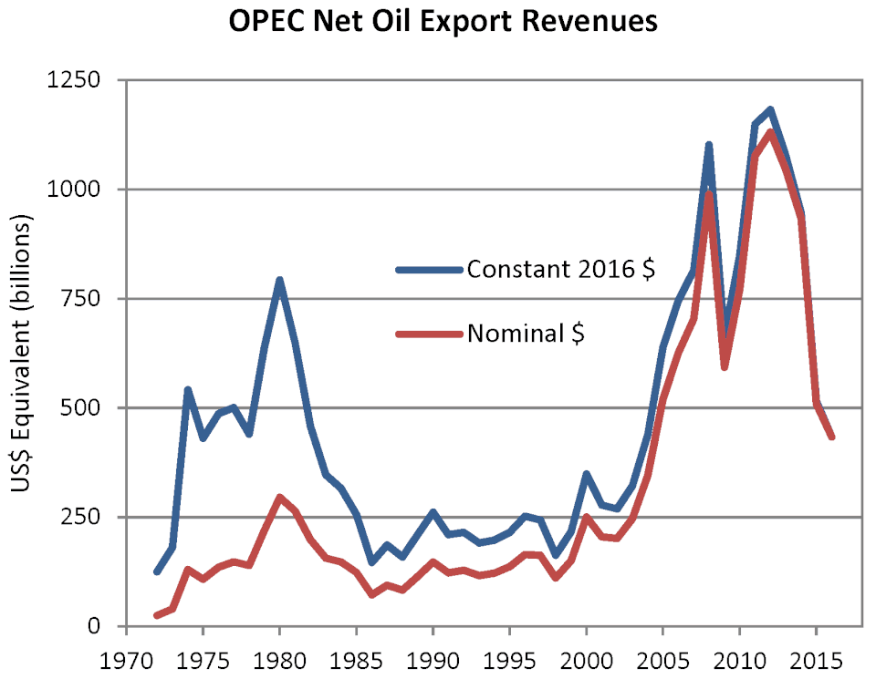

How the Petrodollar Was Built
After Bretton Woods collapsed in 1971, the United States needed a new anchor for global dollar demand. The solution was not gold, but oil. Through bilateral security arrangements beginning in the early 1970s, key Gulf producers agreed to price crude exports in US dollars and recycle surplus revenues into dollar assets, especially Treasury debt. This created a structural loop: countries needed dollars to buy energy, and energy exporters reinvested those dollars back into US financial markets.
In practical terms, the system made the dollar the mandatory settlement layer for the most strategic commodity on Earth. That demand was not purely market-driven. It was reinforced through military guarantees, diplomatic pressure, institutional architecture, and shipping-insurance frameworks that privileged dollar pipelines over alternatives.
Why It Mattered for US Power
When the reserve currency is the invoicing currency for energy, deficits become easier to finance. The US could issue debt at scale while maintaining deep foreign demand for Treasuries. This financed government spending, military posture, and crisis responses at terms unavailable to most nations.
It also turned payment infrastructure into a geopolitical instrument. Dollar clearing, correspondent banking, and sanctions enforcement became tools of statecraft. Nations outside US alignment faced exclusion risk from critical rails of trade settlement and liquidity access.
Petrodollar recycling refers to oil-export revenues being reinvested into US debt, equities, and bank deposits. This deepened Wall Street liquidity, lowered Treasury funding pressure, and reinforced the global centrality of US capital markets.
Fragmentation Pressures
The model now faces pressure from bilateral energy deals in non-dollar currencies, commodity exchanges outside traditional hubs, and reserve diversification by central banks. None of this instantly ends dollar dominance, but it introduces multipolar settlement pathways that reduce single-point control.
The strategic question is not whether one currency replaces the dollar overnight, but whether energy trade becomes increasingly split across regional blocks, each with separate payment rails, custody regimes, and political guarantees.
Sanctions and Settlement Control
Dollar settlement dependence made sanctions far more effective than embargoes alone by targeting access to payment and funding infrastructure rather than cargo alone.
Oil, Debt, and Security Guarantees
The system linked three pillars simultaneously: energy invoicing, sovereign debt demand, and military alliance architecture in critical production regions.